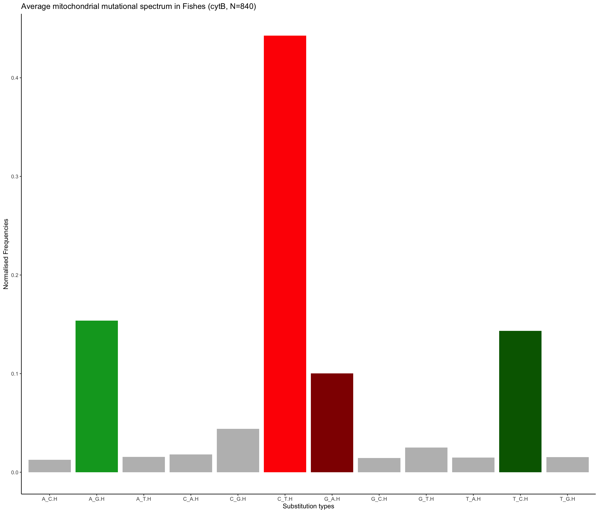
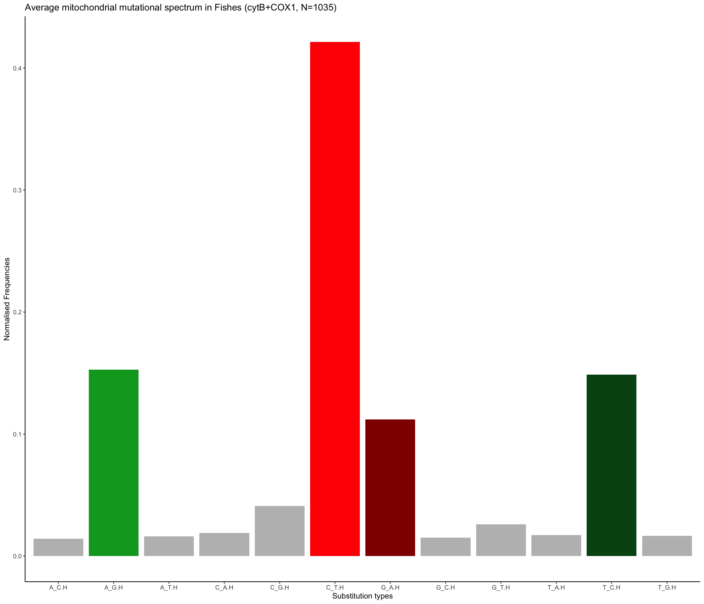
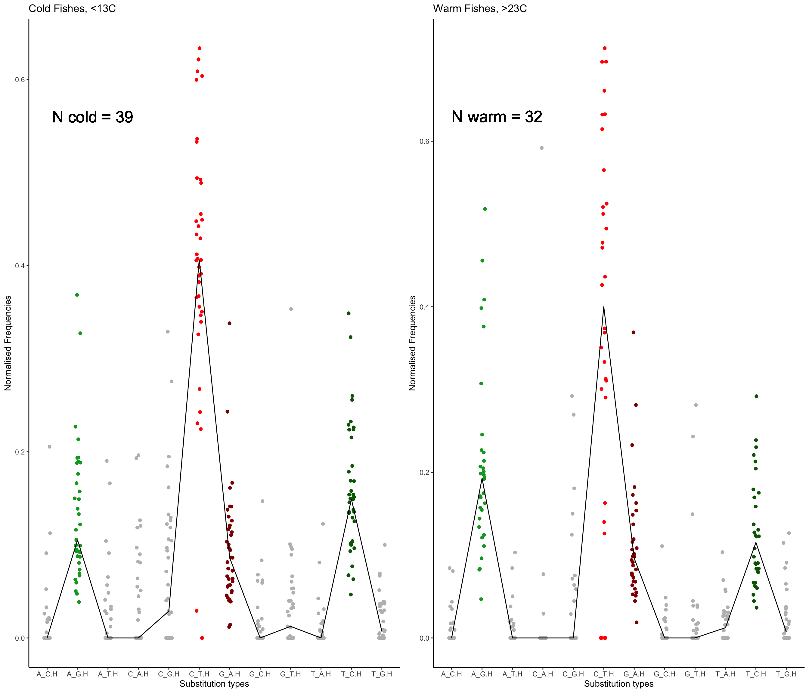
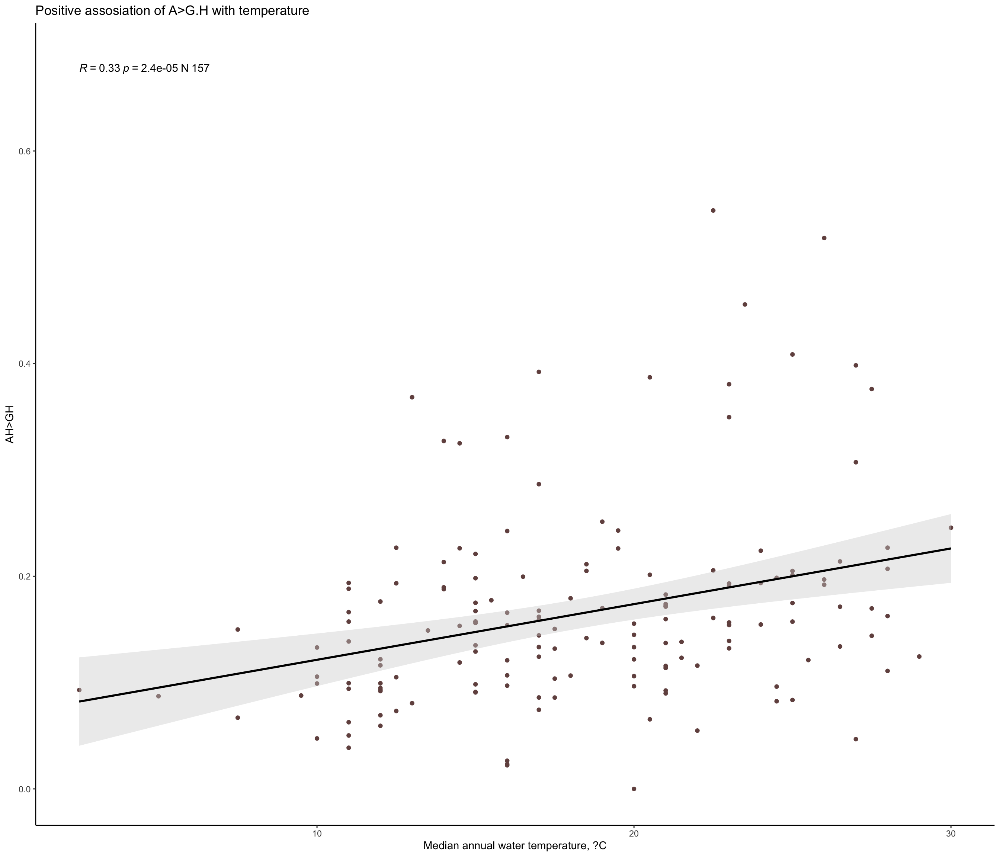
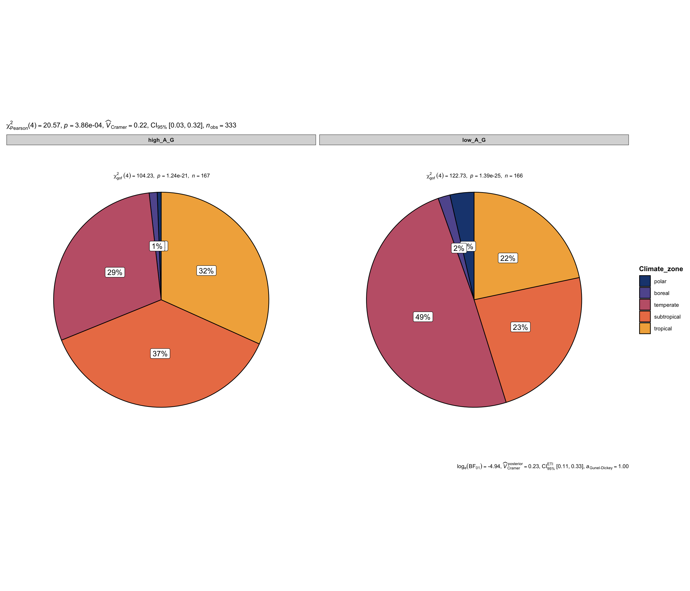

Last updated: 2025-06-18
Checks: 6 1
Knit directory:
TemperatureEffectsOnMtDNAspectra/
This reproducible R Markdown analysis was created with workflowr (version 1.7.1). The Checks tab describes the reproducibility checks that were applied when the results were created. The Past versions tab lists the development history.
Great! Since the R Markdown file has been committed to the Git repository, you know the exact version of the code that produced these results.
The global environment had objects present when the code in the R
Markdown file was run. These objects can affect the analysis in your R
Markdown file in unknown ways. For reproduciblity it’s best to always
run the code in an empty environment. Use wflow_publish or
wflow_build to ensure that the code is always run in an
empty environment.
The following objects were defined in the global environment when these results were created:
| Name | Class | Size |
|---|---|---|
| allEcology | data.frame | 393.7 Kb |
| allEcologyNOCLASS | data.frame | 383.1 Kb |
| blue_red_colors | character | 376 bytes |
| both_freqs | data.frame | 1.7 Kb |
| Classes | character | 408 bytes |
| cold_fish_data | tbl_df;tbl;data.frame | 1.3 Mb |
| ColdFishes | tbl_df;tbl;data.frame | 2.3 Kb |
| ColdFishesNuc | tbl_df;tbl;data.frame | 1.2 Kb |
| ColdSubset | tbl_df;tbl;data.frame | 13.6 Kb |
| ColorA | character | 112 bytes |
| ColorC | character | 120 bytes |
| ColorG | character | 120 bytes |
| ColorT | character | 112 bytes |
| CompColdFishes | tbl_df;tbl;data.frame | 2.5 Kb |
| CompMutspec | tbl_df;tbl;data.frame | 2.6 Kb |
| CompWarmFishes | tbl_df;tbl;data.frame | 2.5 Kb |
| current_iteration_manual | numeric | 56 bytes |
| data_dir | character | 232 bytes |
| docname | character | 136 bytes |
| exp_both | data.frame | 1.5 Kb |
| exp_cold | data.frame | 1.3 Kb |
| exp_warm | data.frame | 1.3 Kb |
| f2 | gg;ggplot | 86.4 Kb |
| fishEcology | data.frame | 746.4 Kb |
| fishEcologyTemp | data.frame | 335.9 Kb |
| GenomeLength | numeric | 56 bytes |
| hlines_cold | data.frame | 1.5 Kb |
| hlines_warm | data.frame | 1.5 Kb |
| merging | list | 699 Kb |
| mergingtest | list | 1.3 Mb |
| mtDNAcodonUsage | data.frame | 1.5 Mb |
| MutAndEcoCb | tbl_df;tbl;data.frame | 225.9 Kb |
| MutNucAndEcoCb | tbl_df;tbl;data.frame | 266.3 Kb |
| mutSpec12 | spec_tbl_df;tbl_df;tbl;data.frame | 1 Mb |
| mutSpec12all | spec_tbl_df;tbl_df;tbl;data.frame | 2 Mb |
| mutSpec12allCb | spec_tbl_df;tbl_df;tbl;data.frame | 1.2 Mb |
| mutSpec12Cb | spec_tbl_df;tbl_df;tbl;data.frame | 780.9 Kb |
| MutSpecForAnalysisCb | tbl_df;tbl;data.frame | 158.2 Kb |
| MutSpecForAnalysisCbAll | tbl_df;tbl;data.frame | 323 Kb |
| n_cores | numeric | 56 bytes |
| Ncold | integer | 56 bytes |
| NcoldNuc | integer | 56 bytes |
| now | POSIXct;POSIXt | 344 bytes |
| NucAndEco | data.frame | 615.3 Kb |
| nucleotide_colors | character | 736 bytes |
| Nwarm | integer | 56 bytes |
| NwarmNuc | integer | 56 bytes |
| obs_both | data.frame | 1.5 Kb |
| obs_cold | data.frame | 1.3 Kb |
| obs_warm | data.frame | 1.3 Kb |
| ObservedCold | tbl_df;tbl;data.frame | 1.2 Kb |
| ObservedWarm | tbl_df;tbl;data.frame | 1.2 Kb |
| output_dir | character | 232 bytes |
| plot_cold_water | gg;ggplot | 1.4 Mb |
| plot_warm_water | gg;ggplot | 1.4 Mb |
| plots_dir | character | 232 bytes |
| plt | gg;ggplot | 276.9 Kb |
| plt2 | gg;ggplot | 208.2 Kb |
| progress_bar_width | numeric | 56 bytes |
| reseed | numeric | 56 bytes |
| sfn | gg;ggplot;ggarrange | 39.9 Kb |
| simulation_data_long | tbl_df;tbl;data.frame | 2.6 Mb |
| SimulationData | data.frame | 799.1 Kb |
| SimulationLengthNumberOfGenerations | numeric | 56 bytes |
| src_dir | character | 232 bytes |
| tables_dir | character | 232 bytes |
| temperaturestat | summaryDefault;table | 1 Kb |
| todelete | character | 192 bytes |
| ToMerge | data.frame | 1.5 Mb |
| total_iterations_manual | numeric | 56 bytes |
| warm_fish_data | tbl_df;tbl;data.frame | 1.3 Mb |
| WarmFishes | tbl_df;tbl;data.frame | 2.3 Kb |
| WarmFishesNuc | tbl_df;tbl;data.frame | 1.2 Kb |
| WarmSubset | tbl_df;tbl;data.frame | 17.6 Kb |
The command set.seed(20240719) was run prior to running
the code in the R Markdown file. Setting a seed ensures that any results
that rely on randomness, e.g. subsampling or permutations, are
reproducible.
Great job! Recording the operating system, R version, and package versions is critical for reproducibility.
Nice! There were no cached chunks for this analysis, so you can be confident that you successfully produced the results during this run.
Great job! Using relative paths to the files within your workflowr project makes it easier to run your code on other machines.
Great! You are using Git for version control. Tracking code development and connecting the code version to the results is critical for reproducibility.
The results in this page were generated with repository version 77db01e. See the Past versions tab to see a history of the changes made to the R Markdown and HTML files.
Note that you need to be careful to ensure that all relevant files for
the analysis have been committed to Git prior to generating the results
(you can use wflow_publish or
wflow_git_commit). workflowr only checks the R Markdown
file, but you know if there are other scripts or data files that it
depends on. Below is the status of the Git repository when the results
were generated:
Ignored files:
Ignored: .DS_Store
Ignored: .Rhistory
Ignored: .Rproj.user/
Ignored: analysis/.DS_Store
Ignored: analysis/.RData
Ignored: analysis/.Rhistory
Ignored: code/.DS_Store
Ignored: data/.DS_Store
Ignored: data/Codons_of_CytB_gene_Chordata.txt
Ignored: data/ColdAndWarmFishesSpectra.txt
Ignored: data/Dataset_S1.csv
Ignored: data/ExpectedFractions.txt
Ignored: data/Extra_climate_data_2025.csv
Ignored: data/Extra_temperature_grow_data_2025.csv
Ignored: data/Extra_temperature_popQB_data_2025.csv
Ignored: data/Full_fish_ecology_table_2025.csv
Ignored: data/MIDORI2_LONGEST_NUC_GB265_Cytb_BLAST.fasta
Ignored: data/MIDORI2_LONGEST_NUC_GB265_Cytb_BLAST.fasta.fai
Ignored: data/MIDORI_WG_CYTB_FISHES.csv
Ignored: data/MolEvolRatesProxy.txt
Ignored: data/SimulationData.csv
Ignored: data/SimulationData2.csv
Ignored: data/Species_by_climate_zones.txt
Ignored: output/.DS_Store
Ignored: output/figures/.DS_Store
Ignored: output/tables/.DS_Store
Untracked files:
Untracked: output/figures/Observed_vs_Expected_Frequencies.png
Untracked: output/figures/Observed_vs_Expected_Frequencies_subset.png
Untracked: output/figures/Simulation_expected_observed.pdf
Untracked: output/figures/Simulation_expected_observed_subset.pdf
Note that any generated files, e.g. HTML, png, CSS, etc., are not included in this status report because it is ok for generated content to have uncommitted changes.
These are the previous versions of the repository in which changes were
made to the R Markdown
(analysis/I_CYTB_polymorphic_mutspec_analysis.Rmd) and HTML
(docs/I_CYTB_polymorphic_mutspec_analysis.html) files. If
you’ve configured a remote Git repository (see
?wflow_git_remote), click on the hyperlinks in the table
below to view the files as they were in that past version.
| File | Version | Author | Date | Message |
|---|---|---|---|---|
| Rmd | 77db01e | Alya Mikhailova | 2025-06-18 | First chapter all done |
| html | 77db01e | Alya Mikhailova | 2025-06-18 | First chapter all done |
mutSpec12 <- read_csv(here(data_dir, "MutSpecVertebrates12fish.csv"))
mutSpec12Cb <- dplyr::filter(mutSpec12, Gene == "Cytb")
cat("N species =", length(unique(mutSpec12Cb$Species)))N species = 840head(mutSpec12Cb)# A tibble: 6 × 9
Gene Class Species Mut Observed TreeLeaves MSAsize Expected MutSpec
<chr> <chr> <chr> <chr> <dbl> <dbl> <dbl> <dbl> <dbl>
1 Cytb Actinopteri Scombrops_gilberti A>C 4 68 1140 71.0 0.0326
2 Cytb Actinopteri Scombrops_gilberti A>G 21.6 68 1140 111. 0.113
3 Cytb Actinopteri Scombrops_gilberti A>T 2 68 1140 71.0 0.0163
4 Cytb Actinopteri Scombrops_gilberti C>A 3 68 1140 86.3 0.0201
5 Cytb Actinopteri Scombrops_gilberti C>G 0 68 1140 86.3 0
6 Cytb Actinopteri Scombrops_gilberti C>T 10.7 68 1140 182. 0.0340MutSpecForAnalysisCb <- mutSpec12Cb %>% dplyr::select(Class, Species, Mut, MutSpec)
MutSpecForAnalysisCb$Mut <- gsub(">", "_", MutSpecForAnalysisCb$Mut)
MutSpecForAnalysisCb <- MutSpecForAnalysisCb %>% pivot_wider(names_from = Mut, values_from = MutSpec, , values_fn = median)
colnames(MutSpecForAnalysisCb) <- c("Class", # Only CytB
"Species",
"T_G.H",
"T_C.H",
"T_A.H",
"G_T.H",
"G_C.H",
"G_A.H",
"C_T.H",
"C_G.H",
"C_A.H",
"A_T.H",
"A_G.H",
"A_C.H")MutSpecForAnalysisBoth <- mutSpec12 %>% dplyr::select(Class, Species, Mut, MutSpec)
MutSpecForAnalysisBoth$Mut <- gsub(">", "_", MutSpecForAnalysisBoth$Mut)
MutSpecForAnalysisBoth <- MutSpecForAnalysisBoth %>% pivot_wider(names_from = Mut, values_from = MutSpec, , values_fn = median)
cat("N species =", length(unique(mutSpec12$Species)))N species = 1035colnames(MutSpecForAnalysisBoth) <- c("Class", # Both genes
"Species",
"T_G.H",
"T_C.H",
"T_A.H",
"G_T.H",
"G_C.H",
"G_A.H",
"C_T.H",
"C_G.H",
"C_A.H",
"A_T.H",
"A_G.H",
"A_C.H")fishEcology <- read.csv(here(data_dir, "Full_fish_ecology_table_2025.csv"))
head(fishEcology) Species Wmax Lmax tmax FeedingType FoodTroph tm Lm Temp_min Temp_max
1 Abbottina_rivularis NA 9.10000 2.00000 <NA> NA 1.000 4.50000 NA NA
2 Abramis_brama 4112.167 46.91111 14.41667 hunting macrofauna (predator) 3.15 4.125 28.75000 10 24
3 Abudefduf_vaigiensis NA 18.96667 NA grazing on aquatic plants 3.39 NA 12.00000 NA NA
4 Acanthemblemaria_aspera NA 3.00000 4.00000 hunting macrofauna (predator) 3.12 NA NA NA NA
5 Acanthocybium_solandri 7200.000 177.88000 9.30000 hunting macrofauna (predator) 4.45 2.000 99.33333 NA NA
6 Acanthopagrus_berda 660.000 56.00000 12.50000 hunting macrofauna (predator) 3.50 NA 21.00000 NA NA
Climate_zone Temp_avg
1 subtropical NA
2 temperate 17
3 tropical NA
4 <NA> NA
5 subtropical NA
6 tropical NAcor.test(fishEcology$tm, fishEcology$Temp_avg, method = "spearman")
Spearman's rank correlation rho
data: fishEcology$tm and fishEcology$Temp_avg
S = 232808, p-value = 0.0002596
alternative hypothesis: true rho is not equal to 0
sample estimates:
rho
-0.3558985 AverageMutSpecCb <- mutSpec12Cb %>% group_by(Mut) %>% summarise(meanmutspec = mean(MutSpec, na.rm = TRUE))
AverageMutSpecCb$Mut.H <- c("T_G.H",
"T_C.H",
"T_A.H",
"G_T.H",
"G_C.H",
"G_A.H",
"C_T.H",
"C_G.H",
"C_A.H",
"A_T.H",
"A_G.H",
"A_C.H")
f1 = ggplot(AverageMutSpecCb,
aes(
x = AverageMutSpecCb$Mut.H,
y = AverageMutSpecCb$meanmutspec,
fill = AverageMutSpecCb$Mut.H
)
) +
geom_bar(stat = "identity") +
scale_fill_manual(
values = c(
"#bdbdbd",
"#00a426",
"#bdbdbd",
"#bdbdbd",
"#bdbdbd",
"red",
"#900000",
"#bdbdbd",
"#bdbdbd",
"#bdbdbd",
"darkgreen",
"#bdbdbd"
)
) +
labs(title = "Average mitochondrial mutational spectrum in Fishes (cytB, N=840)", x = "Substitution types", y = "Normalised Frequencies") + theme(
legend.position = "none",
panel.background = element_blank(),
axis.line = element_line(color = "black")
)
ggsave(here(plots_dir,"Average_mutspec_in_Fishes_CytB.pdf"),
plot = f1,
width = 6,
height = 6
)
f1
| Version | Author | Date |
|---|---|---|
| 77db01e | Alya Mikhailova | 2025-06-18 |
AverageMutSpecBoth <- mutSpec12 %>% group_by(Mut) %>% summarise(meanmutspec = mean(MutSpec, na.rm = TRUE))
AverageMutSpecBoth$Mut.H <- c("T_G.H",
"T_C.H",
"T_A.H",
"G_T.H",
"G_C.H",
"G_A.H",
"C_T.H",
"C_G.H",
"C_A.H",
"A_T.H",
"A_G.H",
"A_C.H")
f1 = ggplot(AverageMutSpecBoth,
aes(
x = AverageMutSpecBoth$Mut.H,
y = AverageMutSpecBoth$meanmutspec,
fill = AverageMutSpecBoth$Mut.H
)
) +
geom_bar(stat = "identity") +
scale_fill_manual(
values = c(
"#bdbdbd",
"#00a426",
"#bdbdbd",
"#bdbdbd",
"#bdbdbd",
"#ff0000",
"#900000",
"#bdbdbd",
"#bdbdbd",
"#bdbdbd",
"#005213",
"#bdbdbd"
)
) +
labs(title = "Average mitochondrial mutational spectrum in Fishes (cytB+COX1, N=1035)", x = "Substitution types", y = "Normalised Frequencies") + theme(
legend.position = "none",
# Remove legend
panel.background = element_blank(),
axis.line = element_line(color = "black")# Remove background
)
f1
| Version | Author | Date |
|---|---|---|
| 77db01e | Alya Mikhailova | 2025-06-18 |
merging <- list(MutSpecForAnalysisCb, fishEcology)
MutAndEcoCb <- merging %>% reduce(left_join, by= "Species")
#write.table(MutAndEcoCb, file = here(tables_dir, "Supplementary_Material_1_Mitochondrial_mutational_spectra_cytb_and_ecology_Fishes.txt"), row.names = FALSE)
temperaturestat <- summary(MutAndEcoCb$Temp_avg)
WarmFishesCb <- filter(MutAndEcoCb, Temp_avg > as.numeric(temperaturestat["3rd Qu."]))
WarmFishesCb <- WarmFishesCb %>% dplyr::select(Species, T_G.H,
T_C.H,
T_A.H,
G_T.H,
G_C.H,
G_A.H,
C_T.H,
C_G.H,
C_A.H,
A_T.H,
A_G.H,
A_C.H)
WarmFishesCb <- pivot_longer(WarmFishesCb, cols = c("T_G.H",
"T_C.H",
"T_A.H",
"G_T.H",
"G_C.H",
"G_A.H",
"C_T.H",
"C_G.H",
"C_A.H",
"A_T.H",
"A_G.H",
"A_C.H"), names_to = "Mut", values_to = "MutSpec" )
NwarmCb <- length(unique(WarmFishesCb$Species))
ColdFishesCb <- filter(MutAndEcoCb, Temp_avg < as.numeric(temperaturestat["1st Qu."]))
ColdFishesCb <- ColdFishesCb %>% dplyr::select(Species, T_G.H,
T_C.H,
T_A.H,
G_T.H,
G_C.H,
G_A.H,
C_T.H,
C_G.H,
C_A.H,
A_T.H,
A_G.H,
A_C.H)
ColdFishesCb <- pivot_longer(ColdFishesCb, cols = c("T_G.H",
"T_C.H",
"T_A.H",
"G_T.H",
"G_C.H",
"G_A.H",
"C_T.H",
"C_G.H",
"C_A.H",
"A_T.H",
"A_G.H",
"A_C.H"), names_to = "Mut", values_to = "MutSpec" )
NcoldCb <- length(unique(ColdFishesCb$Species))
f1a <- ggplot(
WarmFishesCb,
aes(
x = Mut,
y = MutSpec
)
) +
geom_jitter(aes(colour = Mut), width = 0.1) +
scale_color_manual(
values = c(
"#bdbdbd",
"#00a426",
"#bdbdbd",
"#bdbdbd",
"#bdbdbd",
"red",
"#900000",
"#bdbdbd",
"#bdbdbd",
"#bdbdbd",
"darkgreen",
"#bdbdbd"
)
) +
labs(
title = "Warm Fishes, >23C",
x = "Substitution types",
y = "Normalised Frequencies"
) +
theme(
legend.position = "none",
panel.background = element_blank(),
axis.line = element_line(color = "black")
) +
geom_text(
x = 2.5,
y = 0.63,
label = paste("N warm =", NwarmCb),
size = 7
) +
stat_summary(
fun = "median",
geom = "line",
aes(group = 2),
color = "black",
size = 0.5
)
f1b <- ggplot(
ColdFishesCb,
aes(
x = Mut,
y = MutSpec
)
) +
geom_jitter(aes(colour = Mut), width = 0.1) +
scale_color_manual(
values = c(
"#bdbdbd",
"#00a426",
"#bdbdbd",
"#bdbdbd",
"#bdbdbd",
"red",
"#900000",
"#bdbdbd",
"#bdbdbd",
"#bdbdbd",
"darkgreen",
"#bdbdbd"
)
) +
labs(
title = "Cold Fishes, <13C",
x = "Substitution types",
y = "Normalised Frequencies"
) +
theme(
legend.position = "none",
panel.background = element_blank(),
axis.line = element_line(color = "black")
) +
geom_text(
x = 2.5,
y = 0.56,
label = paste("N cold =", NcoldCb),
size = 7
) +
stat_summary(
fun = "median",
geom = "line",
aes(group = 2),
color = "black",
size = 0.5
)
f1 <- ggarrange(f1b, f1a, ncol = 2)
ggsave(here(plots_dir,"Average mitochondrial mutational spectrum in Fishes divided by groups (cytB).pdf"),
plot = f1,
width = 12,
height = 6
)
f1
| Version | Author | Date |
|---|---|---|
| 77db01e | Alya Mikhailova | 2025-06-18 |
correlation_results <- MutAndEcoCb |>
dplyr::select(
"A_G.H",
"A_T.H",
"A_C.H",
"T_A.H",
"T_G.H",
"T_C.H",
"C_A.H",
"C_T.H",
"C_G.H",
"G_T.H",
"G_A.H",
"G_C.H"
) |>
map_dfr( ~ tidy(cor.test(.x, MutAndEcoCb$Temp_avg), method = 'spearman'), .id = "variable") |>
arrange(desc(abs(estimate)))
correlation_results# A tibble: 12 × 9
variable estimate statistic p.value parameter conf.low conf.high method alternative
<chr> <dbl> <dbl> <dbl> <int> <dbl> <dbl> <chr> <chr>
1 A_G.H 0.317 4.16 0.0000527 155 0.169 0.451 Pearson's product-moment correlation two.sided
2 T_C.H -0.168 -2.13 0.0351 155 -0.317 -0.0120 Pearson's product-moment correlation two.sided
3 G_A.H 0.123 1.55 0.124 155 -0.0339 0.275 Pearson's product-moment correlation two.sided
4 A_T.H -0.119 -1.49 0.137 155 -0.271 0.0382 Pearson's product-moment correlation two.sided
5 C_G.H -0.115 -1.45 0.150 155 -0.267 0.0419 Pearson's product-moment correlation two.sided
6 T_A.H 0.0912 1.14 0.256 155 -0.0664 0.244 Pearson's product-moment correlation two.sided
7 T_G.H 0.0798 0.997 0.320 155 -0.0778 0.234 Pearson's product-moment correlation two.sided
8 A_C.H -0.0498 -0.621 0.536 155 -0.205 0.108 Pearson's product-moment correlation two.sided
9 C_A.H -0.0489 -0.609 0.543 155 -0.204 0.109 Pearson's product-moment correlation two.sided
10 C_T.H -0.0413 -0.515 0.607 155 -0.197 0.116 Pearson's product-moment correlation two.sided
11 G_C.H -0.0364 -0.454 0.651 155 -0.192 0.121 Pearson's product-moment correlation two.sided
12 G_T.H -0.0325 -0.405 0.686 155 -0.188 0.125 Pearson's product-moment correlation two.sided #write.table(correlation_results, file = here(tables_dir, "Table1.txt"), row.names = FALSE)
SubsetClass<- unique(MutAndEcoCb$Class)
spN <- nrow(MutAndEcoCb[!is.na(MutAndEcoCb$Temp_avg),])
cat("N species =", spN, "Taxa =", SubsetClass)N species = 157 Taxa = Actinopteri Chondrichthyesf1 <- ggplot(MutAndEcoCb, aes(x = Temp_avg, y = A_G.H)) +
geom_point(color = "#73514f") + # Scatter plot
geom_smooth(
method = "lm",
color = "black",
# Regression line + CI
fill = "lightgray",
se = TRUE
) + # Set se=TRUE for confidence interval
stat_cor(
method = "spearman",
# Spearman correlation stats
aes(label = paste(..r.label.., ..p.label.., "N", spN, sep = "~"))
) + # Include n
labs(title = "Positive assosiation of A>G.H with temperature", x = "Median annual water temperature, ?C", y = "AH>GH") +
theme(
legend.position = "none",
panel.background = element_blank(),
axis.line = element_line(color = "black")
)
ggsave(here(plots_dir,"Assosiation_of_A_G_with_temperature.pdf"),
plot = f1,
width = 6,
height = 6
)
f1
| Version | Author | Date |
|---|---|---|
| 77db01e | Alya Mikhailova | 2025-06-18 |
ClimateZonetest <- na.omit(data.frame(subset(MutAndEcoCb, select = c(Species ,A_G.H, Climate_zone))))
ClimateZonetest$ClimateGroup <- ifelse(ClimateZonetest$Climate_zone %in% c("tropical", "subtropical"), "Warm", "Cold")
ClimateZonetest$Climate_zone <- as.factor(ClimateZonetest$Climate_zone)
AGmedian <- median(ClimateZonetest$A_G.H)
ClimateZonetest$A_G.Freq <- "low_A_G"
ClimateZonetest[ClimateZonetest$A_G.H >= AGmedian,]$A_G.Freq <- "high_A_G"
ClimateZonetest$A_G.Freq <- as.factor(ClimateZonetest$A_G.Freq)
ClimateZonePie <- ClimateZonetest[,2-3]
s1 <- ggpiestats(data = ClimateZonePie, x = Climate_zone, y = A_G.Freq) +
scale_fill_manual(values = c("#F2AF4AFF", "#C36377FF", "#EB7F54FF", "#61599DFF", "#1D457FFF"))
s1
| Version | Author | Date |
|---|---|---|
| 77db01e | Alya Mikhailova | 2025-06-18 |
tidy(wilcox.test(ClimateZonetest[ClimateZonetest$ClimateGroup == "Warm",]$A_G.H, ClimateZonetest[ClimateZonetest$ClimateGroup == "Cold",]$A_G.H))# A tibble: 1 × 4
statistic p.value method alternative
<dbl> <dbl> <chr> <chr>
1 17568. 0.00000467 Wilcoxon rank sum test with continuity correction two.sided correlation_results1 <- MutAndEcoCb |>
dplyr::select(
"A_G.H",
"A_T.H",
"A_C.H",
"T_A.H",
"T_G.H",
"T_C.H",
"C_A.H",
"C_T.H",
"C_G.H",
"G_T.H",
"G_A.H",
"G_C.H"
) |>
map_dfr( ~ tidy(cor.test(.x, MutAndEcoCb$tm), method = 'spearman'), .id = "variable") |>
arrange(desc(abs(estimate)))
correlation_results1# A tibble: 12 × 9
variable estimate statistic p.value parameter conf.low conf.high method alternative
<chr> <dbl> <dbl> <dbl> <int> <dbl> <dbl> <chr> <chr>
1 G_A.H 0.140 1.90 0.0596 181 -0.00562 0.279 Pearson's product-moment correlation two.sided
2 T_C.H -0.124 -1.68 0.0951 181 -0.264 0.0217 Pearson's product-moment correlation two.sided
3 T_G.H -0.0766 -1.03 0.302 181 -0.219 0.0692 Pearson's product-moment correlation two.sided
4 C_A.H -0.0740 -0.999 0.319 181 -0.217 0.0718 Pearson's product-moment correlation two.sided
5 T_A.H -0.0648 -0.873 0.384 181 -0.208 0.0810 Pearson's product-moment correlation two.sided
6 A_G.H 0.0644 0.868 0.386 181 -0.0814 0.208 Pearson's product-moment correlation two.sided
7 C_G.H -0.0565 -0.762 0.447 181 -0.200 0.0893 Pearson's product-moment correlation two.sided
8 C_T.H 0.0557 0.750 0.454 181 -0.0901 0.199 Pearson's product-moment correlation two.sided
9 G_T.H 0.0375 0.505 0.614 181 -0.108 0.182 Pearson's product-moment correlation two.sided
10 G_C.H -0.0298 -0.401 0.689 181 -0.174 0.116 Pearson's product-moment correlation two.sided
11 A_T.H -0.0237 -0.319 0.750 181 -0.168 0.122 Pearson's product-moment correlation two.sided
12 A_C.H -0.00107 -0.0144 0.989 181 -0.146 0.144 Pearson's product-moment correlation two.sided tree <- read.tree(file = here(data_dir, "chordates_species.nwk"))
tree <- ape::drop.tip(tree, "Tenebrosternarchus_preto")
MutAndEcoPGLS <- MutAndEcoCb %>% dplyr::select(Species, A_G.H, C_T.H, G_A.H, T_C.H, Temp_avg)
row.names(MutAndEcoPGLS) = MutAndEcoPGLS$Species
tree_pruned = treedata(tree, MutAndEcoPGLS, sort=T, warnings=T)$phy
data<-as.data.frame(treedata(tree_pruned, MutAndEcoPGLS, sort=T, warnings=T)$data)
data$Species = as.character(data$Species)
data$A_G.H = as.numeric(data$A_G.H)
data$C_T.H = as.numeric(data$C_T.H)
data$G_A.H = as.numeric(data$G_A.H)
data$T_C.H = as.numeric(data$T_C.H)
data$Temp_avg = as.numeric(data$Temp_avg)
data$Tv <- 1-(data$A_G.H + data$G_A.H + data$T_C.H + data$C_T.H)
data_comp <- comparative.data(tree_pruned, data, Species, vcv=TRUE)
summary(pgls(A_G.H ~ Temp_avg, data_comp, lambda="ML"))
Call:
pgls(formula = A_G.H ~ Temp_avg, data = data_comp, lambda = "ML")
Residuals:
Min 1Q Median 3Q Max
-0.0081580 -0.0024766 -0.0007092 0.0012258 0.0165195
Branch length transformations:
kappa [Fix] : 1.000
lambda [ ML] : 0.000
lower bound : 0.000, p = 1
upper bound : 1.000, p = < 2.22e-16
95.0% CI : (NA, 0.119)
delta [Fix] : 1.000
Coefficients:
Estimate Std. Error t value Pr(>|t|)
(Intercept) 0.0682919 0.0243949 2.7994 0.005802 **
Temp_avg 0.0053567 0.0012733 4.2069 4.467e-05 ***
---
Signif. codes: 0 '***' 0.001 '**' 0.01 '*' 0.05 '.' 0.1 ' ' 1
Residual standard error: 0.004066 on 148 degrees of freedom
Multiple R-squared: 0.1068, Adjusted R-squared: 0.1008
F-statistic: 17.7 on 1 and 148 DF, p-value: 4.467e-05 #la.A_G <- phylosig(tree_pruned, data$A_G.H, method = "lambda", test = TRUE) #Phylogenetic signal lambda : 0.280122
#la.C_T <- phylosig(tree_pruned, data$C_T.H, method = "lambda", test = TRUE) #Phylogenetic signal lambda : 0.119451
#la.G_A <- phylosig(tree_pruned, data$G_A.H, method = "lambda", test = TRUE) #Phylogenetic signal lambda : 0.719915
#la.T_C <- phylosig(tree_pruned, data$T_C.H, method = "lambda", test = TRUE) #Phylogenetic signal lambda : 0.813846
#la.Tv <- phylosig(tree_pruned, data$Tv, method = "lambda", test = TRUE) #Phylogenetic signal lambda : 0.113722
#la.temp <- phylosig(tree_pruned, data$Temp_avg, method = "lambda", test = TRUE) #Phylogenetic signal lambda : 0.92032tree <- read.tree(file = here(data_dir, "chordates_species.nwk"))
tree <- ape::drop.tip(tree, "Tenebrosternarchus_preto")
row.names(ClimateZonetest) = ClimateZonetest$Species
tree_pruned = treedata(tree, ClimateZonetest, sort=T, warnings=T)$phy
data<-as.data.frame(treedata(tree_pruned, ClimateZonetest, sort=T, warnings=T)$data)
data$Species = as.character(data$Species)
data$A_G.H = as.numeric(data$A_G.H)
data$ClimateGroup = as.factor(data$ClimateGroup)
data_comp <- comparative.data(tree_pruned, data, Species, vcv=TRUE)
summary(pgls(A_G.H ~ ClimateGroup, data_comp, lambda="ML"))
Call:
pgls(formula = A_G.H ~ ClimateGroup, data = data_comp, lambda = "ML")
Residuals:
Min 1Q Median 3Q Max
-0.0080064 -0.0026449 -0.0007283 0.0013327 0.0172939
Branch length transformations:
kappa [Fix] : 1.000
lambda [ ML] : 0.000
lower bound : 0.000, p = 1
upper bound : 1.000, p = < 2.22e-16
95.0% CI : (NA, 0.368)
delta [Fix] : 1.000
Coefficients:
Estimate Std. Error t value Pr(>|t|)
(Intercept) 0.1375144 0.0077634 17.7133 < 2.2e-16 ***
ClimateGroupWarm 0.0346512 0.0103527 3.3471 0.000917 ***
---
Signif. codes: 0 '***' 0.001 '**' 0.01 '*' 0.05 '.' 0.1 ' ' 1
Residual standard error: 0.004226 on 311 degrees of freedom
Multiple R-squared: 0.03477, Adjusted R-squared: 0.03167
F-statistic: 11.2 on 1 and 311 DF, p-value: 0.000917
sessionInfo()R version 4.5.0 (2025-04-11)
Platform: aarch64-apple-darwin20
Running under: macOS Sequoia 15.5
Matrix products: default
BLAS: /System/Library/Frameworks/Accelerate.framework/Versions/A/Frameworks/vecLib.framework/Versions/A/libBLAS.dylib
LAPACK: /Library/Frameworks/R.framework/Versions/4.5-arm64/Resources/lib/libRlapack.dylib; LAPACK version 3.12.1
locale:
[1] en_US.UTF-8/en_US.UTF-8/en_US.UTF-8/C/en_US.UTF-8/en_US.UTF-8
time zone: Europe/Vienna
tzcode source: internal
attached base packages:
[1] stats graphics grDevices utils datasets methods base
other attached packages:
[1] RColorBrewer_1.1-3 skimr_2.1.5 ggrepel_0.9.6 rfishbase_5.0.1 ggstatsplot_0.13.1 broom_1.0.8
[7] ggpubr_0.6.0 ggExtra_0.10.1 geiger_2.0.11 phytools_2.4-4 maps_3.4.3 caper_1.0.3
[13] mvtnorm_1.3-3 MASS_7.3-65 ape_5.8-1 magrittr_2.0.3 lubridate_1.9.4 forcats_1.0.0
[19] stringr_1.5.1 dplyr_1.1.4 purrr_1.0.4 readr_2.1.5 tidyr_1.3.1 tibble_3.3.0
[25] ggplot2_3.5.2 tidyverse_2.0.0 knitr_1.50 here_1.0.1 workflowr_1.7.1
loaded via a namespace (and not attached):
[1] rstudioapi_0.17.1 jsonlite_2.0.0 datawizard_1.1.0 correlation_0.8.7 subplex_1.9
[6] SuppDists_1.1-9.9 estimability_1.5.1 farver_2.1.2 rmarkdown_2.29 ragg_1.4.0
[11] fs_1.6.6 vctrs_0.6.5 memoise_2.0.1 paletteer_1.6.0 base64enc_0.1-3
[16] effectsize_1.0.1 rstatix_0.7.2 htmltools_0.5.8.1 DEoptim_2.2-8 deSolve_1.40
[21] BWStest_0.2.3 Formula_1.2-5 sass_0.4.10 bslib_0.9.0 fontawesome_0.5.3
[26] emmeans_1.11.1 cachem_1.1.0 whisker_0.4.1 igraph_2.1.4 mime_0.13
[31] lifecycle_1.0.4 iterators_1.0.14 pkgconfig_2.0.3 Matrix_1.7-3 R6_2.6.1
[36] fastmap_1.2.0 PMCMRplus_1.9.12 shiny_1.10.0 BayesFactor_0.9.12-4.7 digest_0.6.37
[41] numDeriv_2016.8-1.1 rematch2_2.1.2 patchwork_1.3.0 ps_1.9.1 rprojroot_2.0.4
[46] textshaping_1.0.1 labeling_0.4.3 clusterGeneration_1.3.8 timechange_0.3.0 mgcv_1.9-3
[51] httr_1.4.7 abind_1.4-8 compiler_4.5.0 bit64_4.6.0-1 withr_3.0.2
[56] doParallel_1.0.17 backports_1.5.0 optimParallel_1.0-2 carData_3.0-5 performance_0.14.0
[61] ggsignif_0.6.4 scatterplot3d_0.3-44 tools_4.5.0 httpuv_1.6.16 statsExpressions_1.7.0
[66] glue_1.8.0 quadprog_1.5-8 callr_3.7.6 nlme_3.1-168 promises_1.3.3
[71] grid_4.5.0 rsconnect_1.4.1 getPass_0.2-4 generics_0.1.4 gtable_0.3.6
[76] tzdb_0.5.0 hms_1.1.3 car_3.1-3 utf8_1.2.6 foreach_1.5.2
[81] pillar_1.10.2 vroom_1.6.5 later_1.4.2 splines_4.5.0 lattice_0.22-7
[86] gmp_0.7-5 bit_4.6.0 tidyselect_1.2.1 pbapply_1.7-2 miniUI_0.1.2
[91] git2r_0.36.2 xfun_0.52 expm_1.0-0 stringi_1.8.7 boot_1.3-31
[96] yaml_2.3.10 kSamples_1.2-10 evaluate_1.0.3 codetools_0.2-20 multcompView_0.1-10
[101] cli_3.6.5 RcppParallel_5.1.10 systemfonts_1.2.3 xtable_1.8-4 parameters_0.26.0
[106] repr_1.1.7 processx_3.8.6 jquerylib_0.1.4 Rcpp_1.0.14 zeallot_0.2.0
[111] coda_0.19-4.1 parallel_4.5.0 MatrixModels_0.5-4 rstantools_2.4.0 bayestestR_0.16.0
[116] Rmpfr_1.1-0 phangorn_2.12.1 scales_1.4.0 insight_1.3.0 crayon_1.5.3
[121] combinat_0.0-8 rlang_1.1.6 fastmatch_1.1-6 cowplot_1.1.3 mnormt_2.1.1